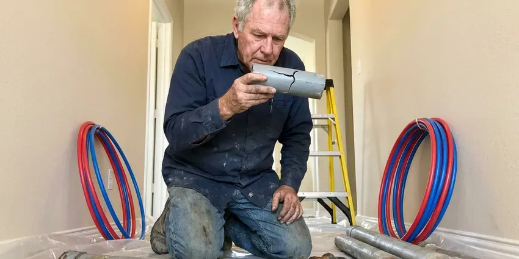

Plumbing Replacement in Keene, NH
Well pump short cycling? FVR Plumbing replaces well pumps and pressure tanks in Keene, NH.
- Code Upgrades Included
- Licensed Plumbers
- Old Equipment Hauled Away
- Local Crews

Get a Replacement Estimate in Keene, NH
Many heater replacements get done the day you call. No obligation to schedule.
Plumbing Replacements in Keene, NH
FVR Plumbing replaces plumbing in Keene, NH that has reached the point where repairs stop paying off, from corroded galvanized pipe to a sewer line full of roots. We look at age, condition and how many times it has been fixed. You get both numbers. If a repair still makes sense, we will tell you, and if it does not, the replacement price comes with a clear reason attached.
Our expertise includes:
- Gas, electric and tankless water heater replacement
- Submersible pump and tank replacement
- Code upgrades like expansion tanks added

Additional Plumbing Replacement Services in Keene, NH
When repairs are no longer enough, our replacement services in Keene, NH deliver durable upgrades that restore full performance.


Customers
Why Choose FVR Plumbing for Plumbing Replacement in Keene, NH?
Replacing plumbing is a bigger check than a fix, so we start with what you have and what has gone wrong with it. If your 6-year-old water heater just needs a new thermostat, we will tell you that and fix it, even though a replacement would be the bigger ticket for us. Honest calls build repeat work.
- Licensed Plumbers, Every plumber licensed and insured on each replacement.
- Quality Equipment, Name-brand heaters, pumps and pipe backed by their makers.
- Local Crews, Plumbers who know local code and local housing.
Citywide Coverage
Homes all over Keene have had plumbing replaced by our crews, from older houses with galvanized pipe to newer homes with failing poly. Each job gets a quote built around its own equipment, layout and access before we start, because two houses on the same street can need very different work. No two jobs match.
Experienced Team
Each technician at FVR Plumbing works across gas, water and drain systems, which matters on replacement jobs. A water heater replacement touches gas piping, venting, water connections and sometimes electrical, and a tech who understands all of them catches problems a single-trade installer might miss. One tech, all systems.
Safety-First Approach
Safety and code compliance start with the permit on every replacement we do in Keene. Required permits get pulled, the work meets the local plumbing and gas code, and an inspector checks it before you depend on it. A second set of eyes helps.
Trusted Certified Keene Plumbing Services Professionals
At FVR Plumbing, we are proud to offer certified plumbing services throughout Keene, NH. Credentials matter in this trade. Our plumbers hold recognized industry credentials, and they follow strict safety and quality rules on every repair, installation and maintenance call we run.
Call Us Now PHCC Plumbing Contractor Recognition
PHCC Plumbing Contractor Recognition Better Business Bureau (BBB) Accreditation
Better Business Bureau (BBB) Accreditation Angi Certified Pro
Angi Certified Pro ISO 9001 Quality Management Certification
ISO 9001 Quality Management CertificationReplacement Work We Handle in Keene, NH
Sump Pump and Well Pump Replacement in Keene, NH
A dead sump pump during a storm floods a basement fast, and a dead well pump means no water at all. In Keene, NH, we replace sump pumps with cast iron or thermoplastic models sized for your inflow, add a check valve, and recommend a battery backup, while well pumps get matched to depth, flow and the pressure switch setting. We run each one through cycles.

Repair vs Replacement Cost Comparison in Keene, NH
A common rule of thumb is to replace when a repair costs more than half the price of new, or when the part is near the end of its life. A 12-year-old water heater with a bad gas valve is a good example, since the valve might cost a third of a new heater and the tank behind it is already close to failing in most homes. You get both numbers.
Water Line Replacement in Keene, NH
A leaking water service line runs your meter all day and night and can soften the soil next to the foundation. In Keene, NH, we swap old galvanized, poly or failing copper service lines for PEX or copper from meter to house, plus a new full-port main shutoff. Most jobs take one day.
Sewer Line Replacement in Keene
Sewer lines in Keene fail from roots, cracks, collapses and bellies where the pipe sank and now holds waste. Frost heave and shifting rocky soil can crack older sewer laterals and shallow water lines. A camera inspection comes first. The video shows where and how badly the line failed, so you can see whether a spot repair, a liner or full replacement fits best.
Well Pressure Tank Replacement in Keene
A well pump that clicks on and off constantly usually points to a failed pressure tank. When the bladder inside the tank ruptures, the tank fills with water, loses its air cushion and forces the pump to start every time someone opens a tap, which burns out pump motors years early. Replacing the tank stops it. The pressure switch gets checked too.
Pipe Replacement & Whole-Home Repiping in Keene, NH
Homes in Keene, NH with galvanized steel or polybutylene tend to show the same symptoms: low pressure, rusty water and leaks that keep coming back. Repiping swaps every supply line from the main to each fixture for PEX or copper, usually in two to four days with water restored most nights. We patch every opening.
Well Pump & Pressure Tank Replacement in Keene
Rural homes around Keene that run on a well have no water at all when the pump quits. The old pump comes up, wire and drop pipe get checked, and the new pump goes in at the right depth, often with a new tank and switch too. Most jobs finish same day.

Well Pump and Pressure Tank Replacement in Keene, NH
Rural properties near Keene, NH depend on the well pump for every drop, so a failure is an emergency. Common signs include pressure that rises and falls, sputtering faucets, a pump that runs constantly or a breaker that keeps tripping, and any of those means the pump, switch or tank is close to giving out. Pumps rarely recover once this starts.
Plumbing Replacement Near You in Keene, NH
Searching plumbing replacement near me in Keene usually means something just failed or is about to. FVR Plumbing is local, so a plumber with the part can often reach you that day, and the same person who diagnoses it installs it. No hand-offs. One plumber, start to finish.
Being close by means short drives when equipment fails. A leaking heater in the garage, a well pump that died overnight or a sump pump that quit in a storm can often be handled the same day, many before dinner. We stock common units.
FVR Plumbing at a Glance
- Fully licensed plumbing team covering Keene, NH
- Same-day appointments and 24/7 emergency response
- Clear written estimates, no hidden fees
- 4.9-star rated by 840+ New Hampshire customers
Keene Map
Keene Information
- Population
- 22,917
- Area codes
- Local
- Service area
- Keene and towns within a 40 mile drive
- Nearby
- Claremont, Concord, Manchester, Nashua
Old pipe, hard water buildup and ground movement wear on every plumbing system, and replacement in Keene, NH is usually cheaper than the third repair.
Expert Services
Reach out to FVR Plumbing for reliable plumbing work done by licensed pros in Keene, NH.
Our Specialized Plumbing Services in Keene, NH
At FVR Plumbing, you get every kind of plumbing service from one company across Keene, NH. We go from leak detection all the way to full system installations, for homes and commercial buildings, and we do it quickly at a fair price. Here are the core services we offer:


From Estimate to Haul-Away, Replacements in Keene, NH
We quote both options, then get to work. Here is the order.
Request a Quote
Call (844) 442-1569 or use the form to set up a visit. We will ask a few questions first.
On-Site Evaluation
In your Keene home, a plumber looks over the failed part and its connections. Code updates get noted.
Install
We remove the old part and install the new one to current code. Each joint is checked.
Frequently Asked Questions About Plumbing Replacement in Keene
It depends on what is being replaced. Tank heaters often run $1,400 to $3,000, water lines $1,800 to $5,000, and sewer lines anywhere from $4,000 to over $12,000 based on length, depth and method. We price it after a visit.
Permits are often needed for water heater, water line and sewer line replacements. We handle permits and inspections when they apply.
Look at the age, repair versus replacement cost, and how often it has needed service. We give you both options with prices.
Often, especially for heaters, mains, sewer and gas. A permit in Keene, NH means a third-party inspector checks the work before you rely on it, which protects you if anything was done wrong. We file and schedule it.
Many take a day to three days, depending on length, depth and method. Trenchless can speed it up.
Scale, sediment, heat and ground movement wear on every system. Testing well water around Keene is the right first step before choosing a treatment system or filter. Regular maintenance helps, but eventually replacement becomes the smarter choice.
Bradford White, Rheem and AO Smith heaters, plus Rinnai and Navien tankless units, and proven softeners and well pumps. We match the brand to the job.
PEX and copper for supply lines. Sewer and drain lines get PVC or, for trenchless jobs, HDPE, and gas lines get black iron or listed flexible gas pipe depending on the run and local code. We match pipe to purpose.
What Our Customers Say About Our Plumbing Experts

Kevin O.
Before buying our house I paid for a sewer camera inspection. FVR Plumbing found a belly in the line that held standing water about forty feet from the cleanout. We used the video to get the sellers to fix it before closing.
Sewer Camera Inspection · Concord, NHRobert G.
The camera showed a full break in our clay sewer line near the street. FVR Plumbing replaced it with a trenchless pipe burst, so the only digging was two small pits in the yard. They let us watch the footage before and after.
Sewer Line Replacement · Manchester, NH
Emily R.
The shutoff valve under our kitchen sink snapped off in my hand on a Sunday morning. FVR Plumbing had someone out by early afternoon. He replaced both angle stops with quarter turn valves and showed me where our main shutoff was, which I honestly did not know.
Plumbing Repair · Claremont, NH
Paul B.
Our pit pump ran nonstop even in dry weather. The plumber found the check valve was stuck open, so the same water kept cycling back into the pit. New valve, new float switch, done in an hour. It runs quiet now.
Sump Pump · Claremont, NHLisa C.
Water was pouring out from under the washing machine on a holiday weekend. FVR Plumbing talked me through closing the valves over the phone and had a plumber at the house within ninety minutes. It was a burst fill hose.
Emergency Plumbing · Londonderry, NH
Karen W.
After our third pinhole leak in copper, we stopped patching. FVR Plumbing gave us a written plan room by room and repiped the house in PEX while we stayed in it. The crew covered our floors every morning and cleaned up every night.
Repiping · Concord, NH